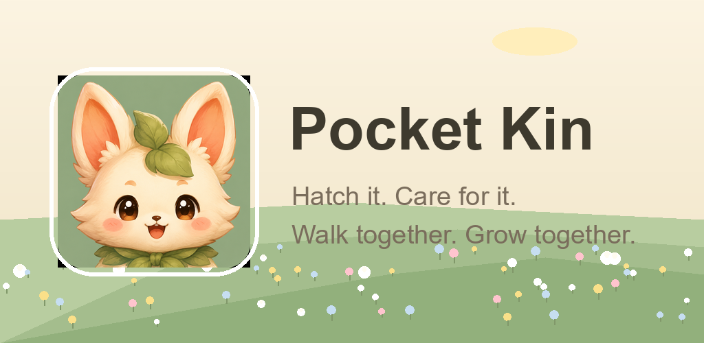
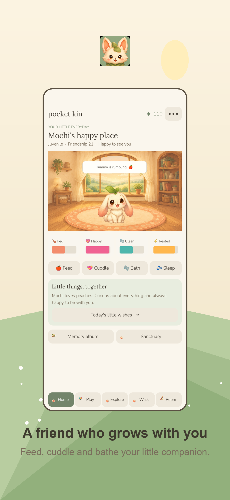
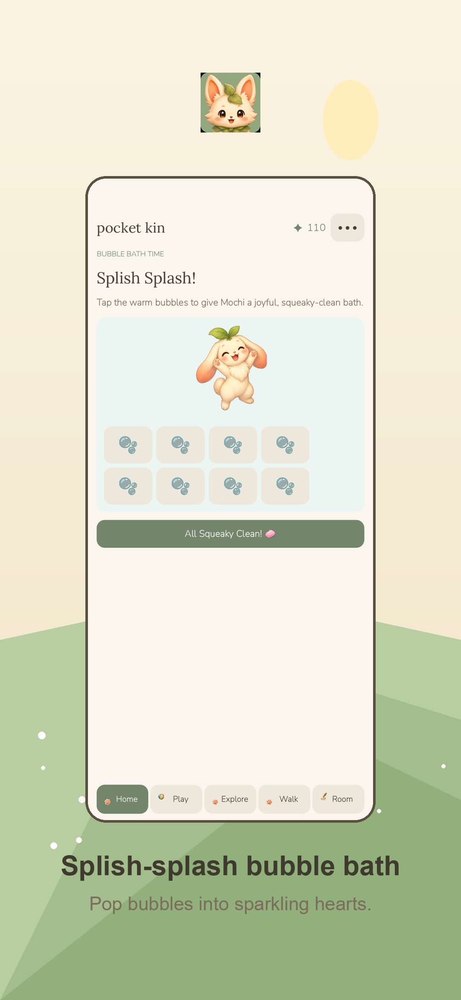
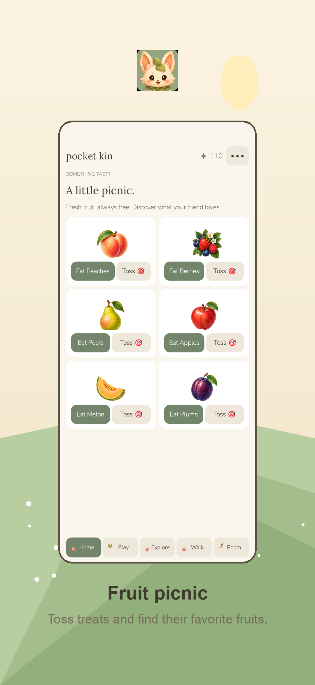
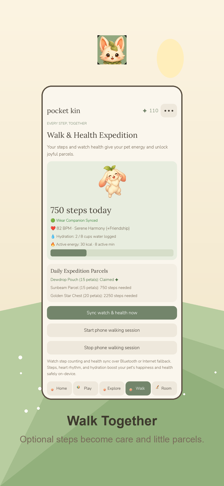
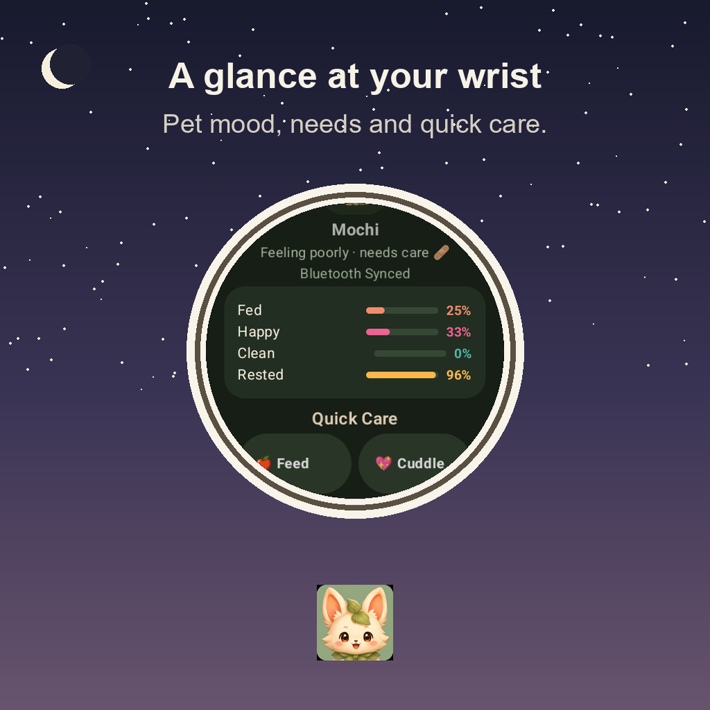
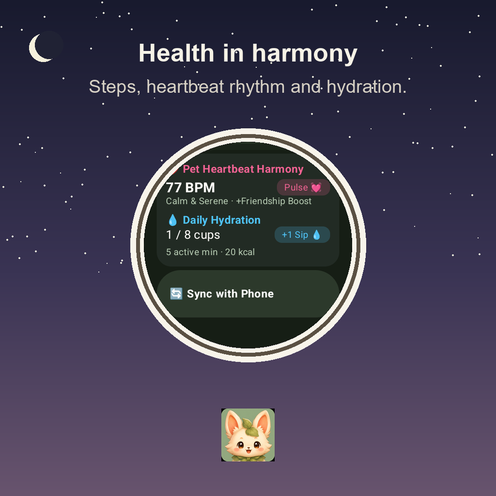
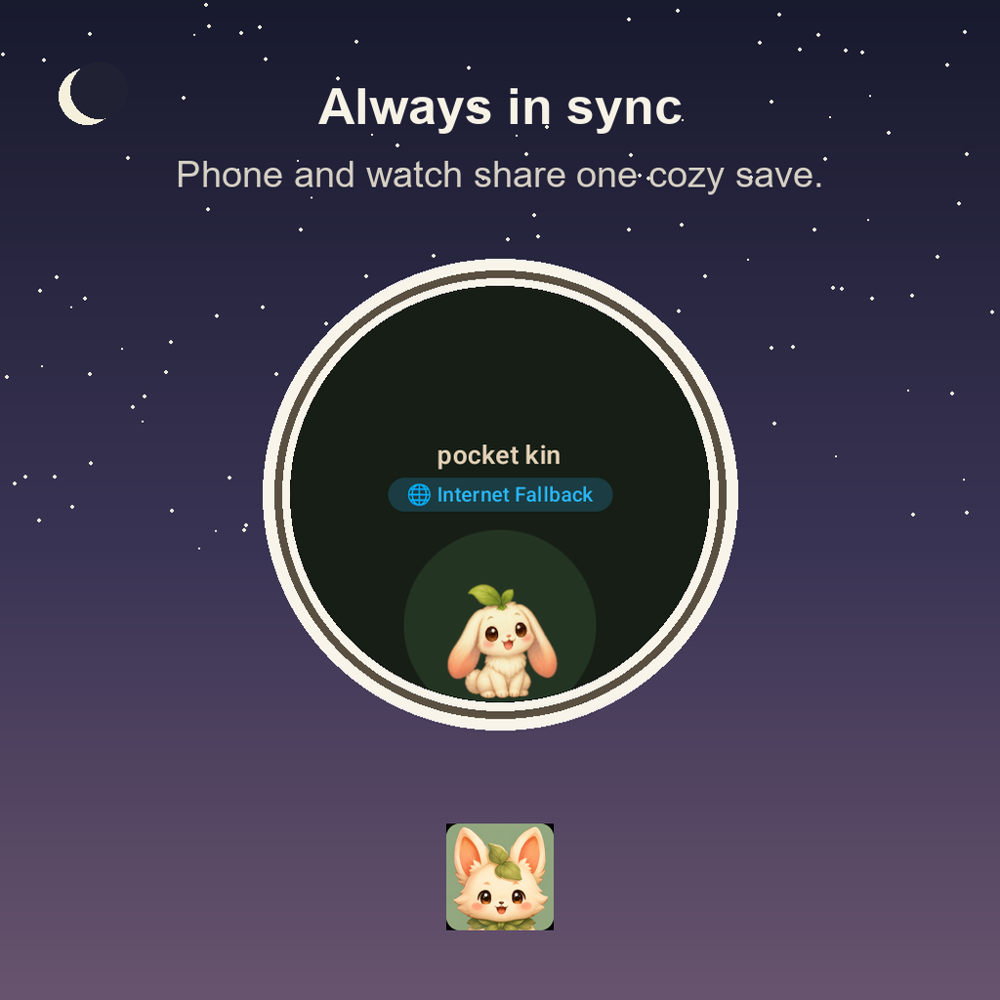
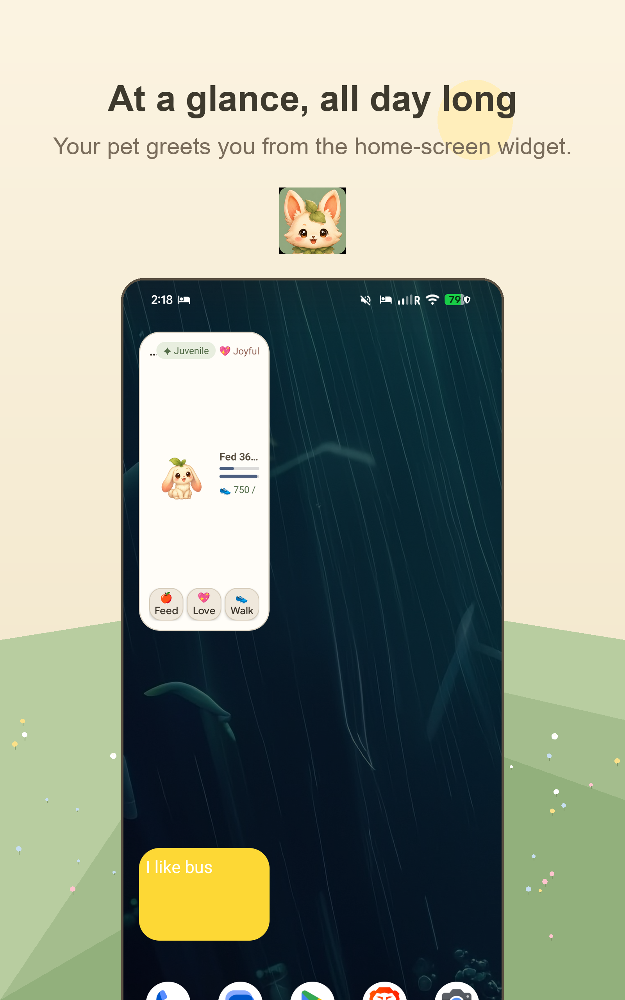
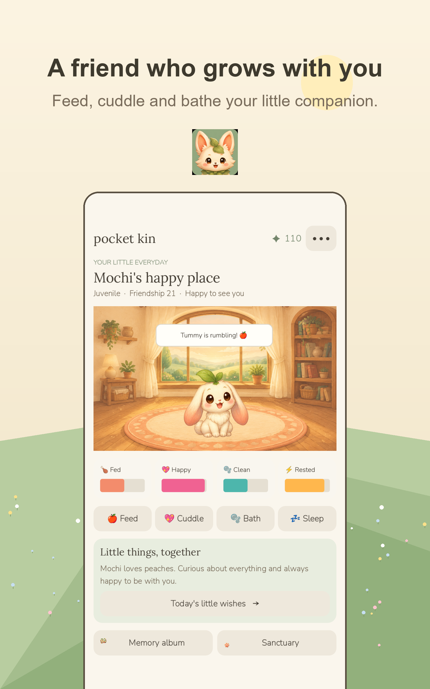

A little friend, every day
Pocket Kin is an original cozy virtual-pet game with hand-crafted watercolor art. Hatch one of six species, name it, and grow a lasting friendship through gentle care, mini-games, decorating and shared walks. No timers that punish you — a missed day never erases progress, and pets recover, never disappear.
🐾 Gentle care
Feed, cuddle, bathe and tuck in your pet. Protected sleep, treatable sniffles, zero goodbyes.
🎮 Cozy mini-games
Orchard Drop, Kin Sky Hop and Treasure Match — plus meadow, woodland and moonlit pond outings.
🚶 Walk Together
Optional step tracking turns daily strolls into parcels and friendship. Fully playable without it.
⌚ Wear OS companion
Glance at mood and needs, log water, and run quick care from your wrist.
🖼️ Home-screen widget
Your pet lives on your home screen with quick Feed, Love and Walk actions.
☁️ Cloud saves
Optional encrypted backup with explicit conflict choice — your pet is saved locally either way.
Screenshots




On your wrist
The Wear OS companion mirrors your pet's mood, needs and steps in real time — log water, run quick care and play a tiny rhythm game from your watch.



On your tablet too


Family friendly by design
Parent gate before purchases and account actions, no chat, no user-generated content, and ads that never interrupt care. Core care and progression are always free; in-app purchases are optional cosmetic and convenience additions with strict parental verification.
Support
Questions, feedback or trouble with the app? Email support@charleshartmann.com — include your device model and a description of what happened, and we'll help.